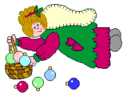
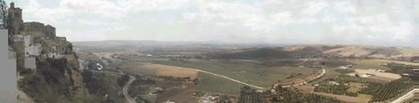

Adornad vuestras moradas (Deck the halls)
Fum, Fum, Fum
A nevar, a nevar, a nevar (Let it snow...)
Gloria in Excelsis Deo
Ay, del Chiquirritín
La marimorena
Blanca Navidad
Los peces en el río
Caminando en un mundo ideal
Mundo feliz (Joy to the world)
Campana sobre campana
Navidad, Navidad (J.Bells)
Campanilleros
Noche de Paz
El Abeto
No llores María
El Tamborilero
Rin, Rin
El Trineo (Jingle Bells)
Rudolph
En las alturas Gloria a Dios
Vamos Pastores
En trineo tú y yo
Venid Fieles (adestes)
Feliz Navidad
Viene Santa Claus